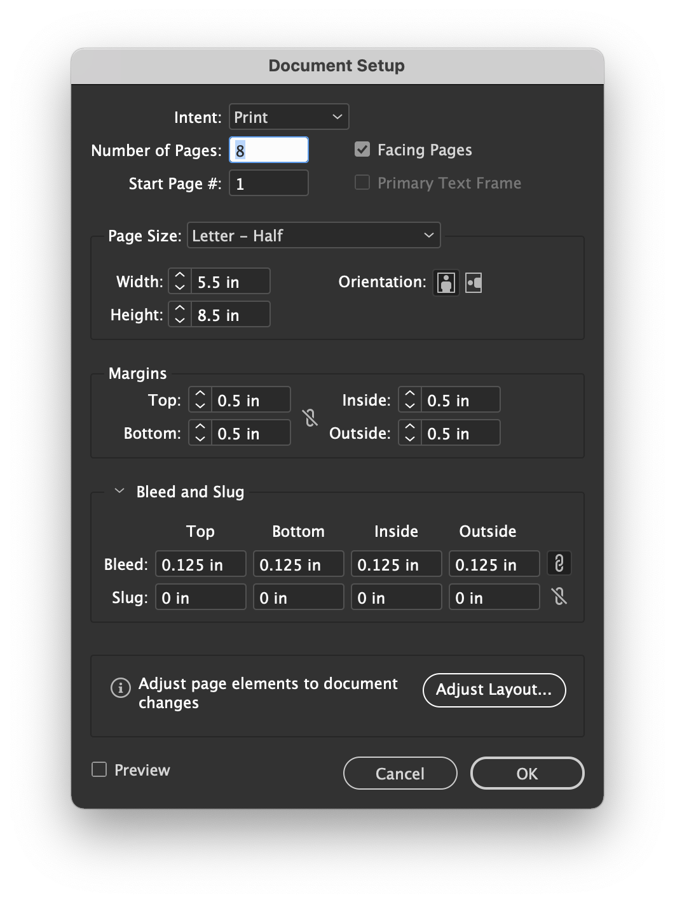
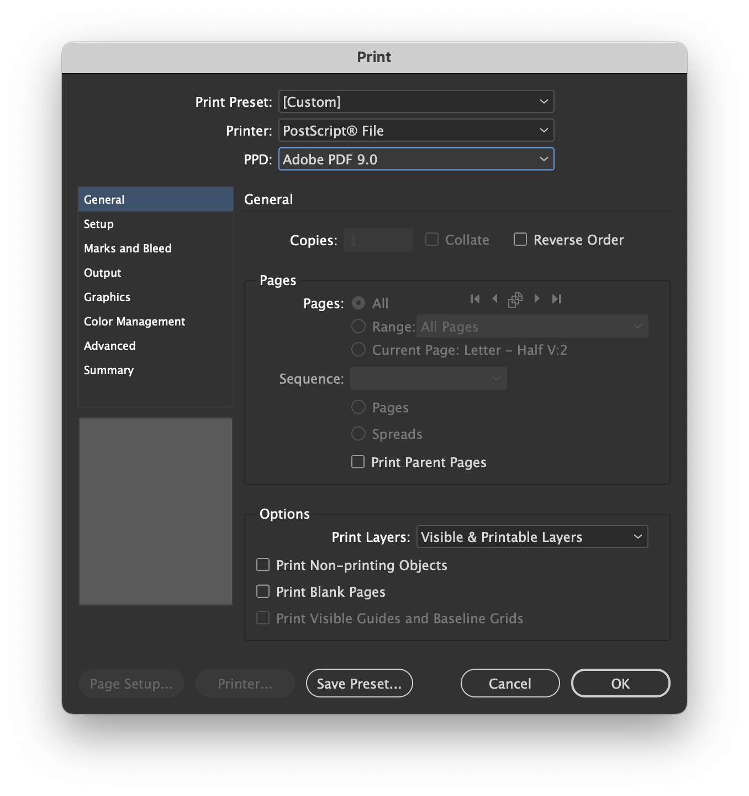

File > Export

Choose the proper filename and save as Adobe PDF (Print).

Export all pages as single Pages, not Spreads.

You don’t need crop marks or bleedings.

Click on Export and you’re done with the first file.
Please read my comments.
Make the necessary adjustments
follow the instructions for the submission.
You’ll submit two files.
Let’s say I have an eight-page InDesign document that looks like this.
I’d export it twice for this assignment.
This is the easiest submission.
File > Export
Choose the proper filename and save as Adobe PDF (Print).
Export all pages as single Pages, not Spreads.
You don’t need crop marks or bleedings.
Click on Export and you’re done with the first file.
Please pay attention to the following instructions.
Start by making sure you have bleeding on your document. (I use 0.125in.)

Then, click on File > Print Booklet….
Choose 2-up Saddle Stitch and click on Print Settings….
Choose PostScript® File and Adobe PDF 9.0. (There’s a great chance that you don’t have that as an option. If that’s the case, please follow the instructions from Adobe. Make sure you replace Adobe InDesign CC 2018 from step 2 in Adobe’s instruction with the version you’re using. Let me know if you need help.)

On Setup, choose Paper Size: Tabloid.
For orientation, you want landscape (second from left).
And choose Page Position: Centered.
Now you do want crop marks.
And you may use the document bleed settings, if you set them up right.
On the Output, choose Color: Composite CMYK,
Your preview should be something like this:

Click on Print.
Save the .ps file as lastname-type-specimen-booklet
You can download both of my file here.
Are the facts context for the type family properly described and explained on the page? Did you include type designer, year, and location?
Does the visual language appropriately reflect the references on the image collection? Do the colors effectively enhance the quality of the typeface?
Can we have a good sense of the type family? Did you show the main characters? Are we able to see some nice details in its design?
Are the typefaces appropriate? Does the visual hierarchy reflect the content hierarchy? Do the paragraph lines have an appropriate length? Is the type size adequate for legibility? Is the leading adequate for the type size?
Do you have files that look like mine?
Save an eight‑page PDF with the name convention lastname-type-specimen.pdf
Save a four‑page PostScript file with the name convention lastname-type-specimen-booklet.ps
Submit both files to Canvas by Friday, 10 December 2021 at 11:59pm (for both labs). That’s Friday of finals week.
You have received feedback on the first rounds, but this final round is the one that will actually count.